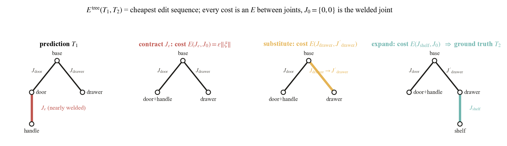
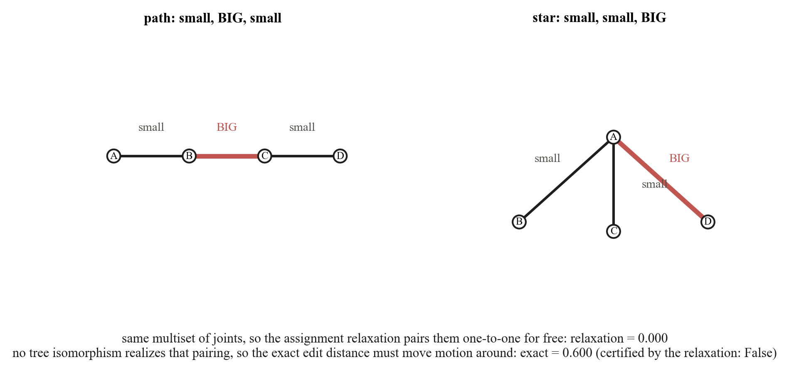

An object is a tree with links as nodes and joints on the edges, and the same object admits many
trees: parts can be relabeled, the base re-chosen, a handle welded to a drawer or split off. The tree
metric is the cheapest sequence of edits from one tree to the other,
Etree(T₁, T₂) = infπ Σo∈π c(o), with
substitution costing E(J, J′) and contraction or expansion costing
E(J, J₀). A spurious joint that barely moves costs
ε‖ξ‖, not a constant penalty, so topology errors and joint errors are priced in
the same motion currency and the metric is continuous through the welded boundary. Exactly fixed edges
are contracted first (contract_small_edges) because they are representation noise.

Any edit sequence can be reordered into contract, then substitute along a tree isomorphism, then
expand. The exact distance is therefore a minimum over matchings of the edge sets that extend to an
isomorphism of the contracted trees. Dropping that realizability condition gives the
assignment relaxation: a Hungarian matching over the joint multisets with
E(J, J₀) as the unmatched cost (assignment_tree_distance). It is
always a lower bound, it is polynomial for any input, and it needs only the multiset of predicted
joints. Whenever its optimal matching happens to be realizable, checked in linear time by
matching_realizable, the relaxation certifies the exact value.
exact_tree_distance returns (distance, certified) and falls back to a small
constrained search otherwise.